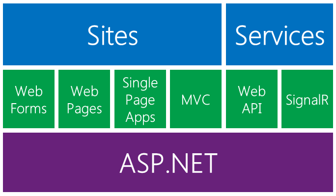

ASP.NETのコアを土台に、サイト作成用の技術とサービス作成用の技術が構築されています。

サーバーからHTMLなどを返すアプリケーションを作成する技術です。
後ほど各要素について詳しく説明します。
サーバーからXMLやJSONなどを返すアプリケーションを作成する技術です。
多くの場合はエンドユーザーから直接呼び出されることはなく、 クライアントとなるプログラムから呼び出されます。
クライアント側は受け取ったデータを処理した上で画面に表示します。
ASP.NET Web API は RESTスタイルのAPI開発に使用します。ASP.NET SignalR は WebSocketのようなサーバー-ブラウザ間の双方向リアルタイム通信を実現するためのライブラリです。
ASP.NETでは、Webアプリケーションを作成するため、以下の3つのフレームワークを提供しています。
| 開発スタイル | If you have experience in | |
|---|---|---|
| ASP.NET Web Forms | HTMLとコードを同じファイルに記載 | Windows Form, WPF, .NET |
| ASP.NET Web Pages | 豊富なHTMLをカプセル化したコントロールのライブラリを使用した高速開発 | Classic ASP, PHP |
| ASP.NET MVC | MVC(Model, View, Controller)スタイルの開発 | Ruby on Rails, .NET |
上記の図にある Single Page Application は ASP.NET MVC の発展型です。
MVC（Model View Controller モデル・ビュー・コントローラ）は、ユーザーインタフェースをもつアプリケーションソフトウェアを実装するためのデザインパターンである。 アプリケーションソフトウェアの内部データを、ユーザーが直接参照・編集する情報から分離する。そのためにアプリケーションソフトウェアを以下の3つの部分に分割する。
- model: アプリケーションデータ、ビジネスルール、ロジック、関数
- view: グラフや図などの任意の情報表現
- controller: 入力を受け取りmodelとviewへの命令に変換する
MVC は Smalltalk における ウィンドウプログラム開発の設計指針として生まれたものです。
ASP.NET MVC は MVC のデザインパターンで ASP.NET Webアプリケーション を開発するにあたって 必須であったり、便利な機能を提供するフレームワークです。